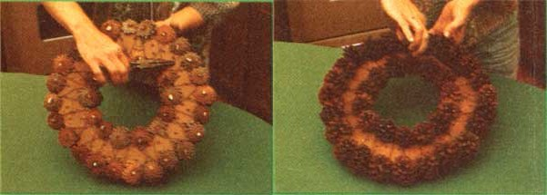
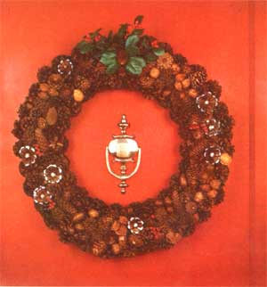

It would be hard to imagine any more delightful Christmas ornaments than pine-cone wreaths such as the one pictured here. And the "wild garlands" (which can be used to decorate your home, provide treasured gifts for friends and relatives, or bring in a tidy part-time income) won't cost you much except time ... because nearly all of the materials can be had free-for-the-foraging!
In fact, the actual gathering of your wreathmaking "goods" can be just as much fun as is the craft work itself! Take the whole family with you-at any time of the year (you'll find that different "wild decorations" come into their best during each of the four seasons)-and collect a variety of "pine" cones (actually, the seed carriers from spruce, hemlock, piñon, white pine, and others are all useful) along with any other forest treasures that dry well ... such as acorns, nuts, seed pods, and gum-tree "balls".
Once you've amassed a goodly supply of wreathmakin' materials, you'll have to oven-dry your supply of cones. The heat helps preserve the evergreen seed pods, dries up their sticky gum, and -in the process-will make your kitchen smell wonderful! Simply place your gatherin's on aluminum-foil-covered cookie sheets and bake 'em, at 150°F, for 15 minutes (or until they feel dry).
The "base" of your wreath should be jigsawed from very thin board (we've found that inexpensive wood paneling works especially well). After you've cut a hoop of the size you want, take a drill- with a 1/4" or 3/8" bit-and bore numerous holes (at random, but approximating a series of concentric circles-3/4 inch apart-from the inside of the wreath to its outer edge), which will allow you to wire the foraged decorations in place.
Most any thin, flexible craft (or shop) wire will serve to fasten your cones, nuts, and so forth to the wreath's base. However, if you want to keep your costs down, try to locate an electrical supply firm's reclamation yard. Such outlets usually sell spools of copper-coated aluminum wire for pennies a pound. (You'll also need a scrap of heavier wire for the wreath's hanging hook . . . but a piece of coat hanger will serve this purpose well enough.)
To begin the creative part of your project, take the end of an approximately 12-inch length of fine wire and-from the back of the wreath board-push it through a hole near the ring's inner edge. Then fold the wire tip over and twist it ... to form a "knot" that won't pull back through the hole.
Select a number of small, sturdy, nicely shaped cones (enough to go around the inner and outer borders of the garland), hold one of the pine cones-perpendicular to the wreath and with its bottom layer of "petals" under the inner edge of the hoop-next to the wire "knot", and wedge the cone onto the thin rim of the wood. Then secure the decoration against the inside of the ring by running the wire out around the cone and back down through another hole ... so that the working end of the strand winds up, again, emerging from the underside of the wreath.
With that done, simply jam another cone in place-tightly against and actually enmeshed with the first-and continue the procedure, adding wire as needed, around both the inner and outer edges of the hoop.
When the borders are finished, choose a spot to serve as the top of the wreath, bend hooks in the ends of a 6-inch length of coat hanger. . . and fasten the wire tips through holes in the board to form a hanging loop.
Next, split a number of white pine cones (these are long-and somewhat delicate-"pods") into lengthwise halves ... simply grab them near the top and pull them apart. Wedge the separated pieces (flat sides down) into the space left between the two rings of small cones . . . until the entire surface of the wreath is covered. (This layer should fit in place snugly enough so as not to need wiring.)
Now's the time to let your imagination loose and be artistic. You might want to start, for instance, by making a pretty central "design" at the top of your wreath. Try cutting away (use pruning shears) all but the two or three basal layers of "petals" from a squat cone to form a "flower". Then glue (a white carpentry adhesive will work well) an acorn, perhaps, in the bloom's center . . . wire the brittle blossom in place . . . and surround it with symmetrical groupings (wired together before they're secured to the wreath) of nuts, small cones, etc. You'll also probably want to center a complementary design at the bottom of the wreath ... and "fill in" the hoop's sides with a number of other, slightly less striking, groupings.
NOTE: Nuts must, of course, be drilled before they can be securely wired to a wreath. This is the most difficult part of the entire craft project. Hold the "squirrel food" securely in a pair of pliers, and use a metal-piercing 1/8" drill bit ("soft" bits can snap, dangerously, when forced against hard hickory or walnut shells).
When you're satisfied with the balance of your design, fill in all of the "holes" (just look at the wreath awhile, and you'll notice spots that "need something") with alder seed pods, tiny hemlock cones, acorns, and so forth ... all glued in place.
Finally, to cover the network of wires on the "wall side" of the decoration, glue a felt "cover" (of the same size and shape as the garland, of course) to the hoop's back. You may also want to protect (and "shine") your finished wildcraft with a light coat of clear acrylic.
That's all there is to making a lovely "wild wreath" that'll grace any wall, thrill a special friend, or sell for $35 (or more!) at your local craft shop.
And don't think pine-cone wreaths are appropriate only at Christmas! You'll find that the wonderful wall hangings (which, if treated gently, should last next-to-for-ever) give any room a warm, decorative touch that's in season all year round!
|
 The two border rows of cones are wired in place, overlapping the edges of the wreath blank . . . to provide a beautiful beginning to the garland. |
 The completed decoration is lovely enough to grace anyone's home! |
|